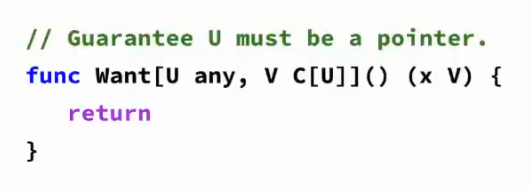

注意: 本文主要是对 Go 夜读中 第 128 期视频 做的技术笔记摘抄
以及本文讨论范围仅限于 Go 1.18
什么是泛型
泛型编程的中心思想是对具体的、高效的算法进行抽象，以获得更通用的算法，然后这些算法可以与不同的数据表示方式结合起来，产生各种各样有用的软件
本质上就是: 将算法和类型解耦，以便更广泛地复用算法
为什么需要泛型
比如一个加法函数
func Add(a, b int32) int32 { |
这种函数只适用于 int32 类型的数来加，如果要对 int、int64、byte 等类型的加数进行运算，就需要分别实现 AddInt、AddInt64、AddByte 等函数
如果不用泛型，那么就会
- 代码冗余，一个类似的逻辑要写多个函数
- 在 Go 没有泛型之前，大家都使用空接口类型
interface {}，但这样便无法进行类型检查，同时性能也会有损耗
而使用泛型的最终目的，是为了 保证实参的传递是类型安全的，并且也能对实现的类型进行抽象
什么时候需要泛型
当使用 接口(interface) 作为函数的形参类型时，函数调用时传递的实参可以是 完全不同 的类型
当使用 类型参数(type parameter) 作为函数的形参类型时，函数调用时传递的实参 必须是满足类型参数所约束的类型

总之
- 当编写的函数的操作元素的类型为
slice、map、channel等特定类型时 - 编写通用数据结构时
Go 泛型是怎么样的
type parameter 长什么样
如图所示，类型参数 T 的声明后面跟着 类型集(type set) C，类型集 C 的作用是 类型约束(type constraints)
type set 长什么样
如图所示，类型集本质上就是接口，而对于接口来说，它也 可以具有类型参数
应用1:对实现的类型进行抽象
对 Map 函数的类型进行抽象
对 Reduce 函数的类型进行抽象
注意: 这里
interface {}其实就是any
应用2:精简调用代码
这里用了包裹函数 func (s wrapSort[T]) ...，使用 sort.Sort 就必须实现冗余的接口约束
应用3:更多例子
比如一些 channel 的统一抽象
类型参数的声明可以简化
如下图
但不推荐直接简化成
因为前者是对数组里面的元素做一个类型的抽象，而后者是对整个数组的整体做一个抽象，后者的意思就完全变了
一个困惑点
接口包含类型集时，无法作为具体的参数使用
比如
为什么第二个 bar 不会报错?
因为第一个 bar 中 Ia 本身实际上只约束了一个类型(指针类型 *T?)，所以这个场景下没有能力作为一个参数来使用
而第二个 bar 中 Ib 并没有约束类型是啥，所以参数可以随便用
抽象能力
Go 的泛型没有任何运行时(run-time)机制，所以关于泛型的组件就只发生在编译时(compile-time)
比如对于下面的接口，无法作为普通参数使用，因为它没有被实例化
类型参数的使用场合
考虑使用的场合
- 函数的实现和参数类型 不强相关 时
- 要实现一个通用的数据结构时
- 能够扩大代码的使用范围和提升可读性时
不考虑 使用的场合
- 一个方法的实现对不同类型都不相同时(有点废话)
- 可以用纯接口参数来代替类型参数时
比如下面的例子
core type
core type 即 核心类型
接口可以嵌入类型集，那么一个 约束 可以包含多种不同的类型
核心类型是指，一个接口只能约束一种底层类型(underlying type) 的情况，这个接口就是 核心类型
注意:普通类型的底层类型也属于核心类型
对于下面的接口来讲
他们的核心类型分别是
U:*intV:float32W: 无(因为约束了 2 种)
对类型使用运算符
可以进行比较(==、!=)的类型允许使用 comparable 接口类型进行约束
比如
可以进行排序(<、<=、>、>=)的类型允许使用 constraints.Ordered 接口类型进行约束
比如
但是在接口中 不能直接使用运算符方法
比如
主要原因可能是可比较性在本质上应该被定义为
所以下面这样的代码就会报错
因为 x == y 的值是一个 bool 类型值，此时这个值是不能赋值给 MyBool 类型的
而且比较对象的类型无法定义为自身类型
Go 泛型部分使用场景
返回满足接口约束的具体类型
比如下图
上面是一个获得返回不同类型的方法
要注意的一点的是，具有 指针接收器方法的类型必须使用指针类型作为类型参数
比如
注意图中的 func (b *B) Bar() {}
直接使用 Want[B]() 会报错
B 并没有实现 C，因为 Bar 方法有一个 指针接收器 *B
那么如何解决呢? 可以这么写
即 将指针指定为约束的核心类型，将 *T 加入到约束 C 中
同时

U 类型进一步通过 C 类型来做限制，限制为有一个指针的核心类型
那么执行的结果就是
最终拿到的都是指针
类型参数的强制转换
由上图可知，符合类型约束的类型(int(x)) 不能 被强转为类型参数(T)
无类型常量的类型推导
比如 math.MaxFloat32 会被推导为 float64 类型，因为它在 Go 里面是这样的
可能会破环现有的编程范式
比如下面的代码
如果要把 Config 抽出来，那么就要改对应的 Window struct，如下
当 Window 变成泛型时，对应代码 NewWindow 中的 Option 也要改成泛型，因为需要接受一个泛型的参数
而对于 Config 而言，它也要变
但在调用的时候，就会多了些类型参数要填上去，比如 [int, string]
现在的泛型还是会对代码产生一定程度的破坏
Go 泛型一些关键的算法
类型推断使用的方法是 类型合一(unification by substitution)
泛型的实例化通过字典和 Gcshape 模板
类型集的计算
Go 泛型的限制
comparable 的困境
下面代码会输出啥
在 Equal(v1, v2) 那里会报错
为什么 interface {} 没有实现 comparable 呢?
因为 type parameter 的提案对 comparable 的定义是
The type set of the comparable constraint is the set of all comparable types
对于空接口 interface {} 来说，它理应属于 comparable，但实际上并非如此
注意: 在 Go 1.18 之前，接口类型的值是可以比较的
而在 Go 1.18 中，comparable 的定义如下
也导致了无法写出如下的代码(下图中 ERROR 部分)
在 [T any] 中，any 本身并不是 comparable 的
对于上述情况，社区还在讨论中
不允许方法上的类型参数
目前还不允许这种写法(下图中的 ERROR 部分)
这主要是因为 Go 一个潜在的语言设计问题(运行时的类型断言)
编译器 无法提前得知 是否应该给 x 生成 Bar(int) 方法，因为 x 是 any 约束，编译的时候并不知道这个 x 是否是上面的 type X，这只可能会在运行时才知道你传进来的 x 是什么
类型集的本质
类型集的基本思想是设计一种能够表达一类类型的机制
设计这种机制的核心难点是保证不会出现 罗素悖论
例如不加以限制的 分类公理 是朴素集合论中的导致矛盾的根源
类型集可以从 ZF 系统来考虑
- 外延公理: 两个类型集相等，当且仅当他们包含的类型相同
- 分类公理: 给出一个类型集和一个普通接口，存在同时满足他们的子集
- 并集公理: 两个类型集可以求并集
- 空集公理: 存在一个不满足任何类型的类型集
- 无穷公理: 存在一个包含无穷多个类型的类型集
- 等等…
类型集的困境
检查类型是否满足接口描述的类型集，是一个典型的 可满足性问题(SAT)
这个问题是一个 NP 完全问题(Cook-Levi 定理)
编译器如果在编译期间执行这类检查，如果不对规则加以限制，则将在某些情况下极大的增加编译时间
这也最终导致了 “并集元素(ConstraintA 、ConstraintB)中不能包含 具有方法集 的 参数类型”
所以 Go 1.18 中的类型集设计并不是完备的，即某些类型集无法这样表示
不支持变长类型参数
比如下图中写一个 可变长的元组类型就不行

更多限制
并同时不支持
- 特化
- 元编程
- 柯里化
- 非类型类型参数
- 运算符方法
- …
总结
- 类型参数 更广泛的支持了基于接口的参数化多态
- 类型集 使用了公理化集合论(更特别一点类型论)的方法扩展了接口的定义实现了类型约束
- 类型推导 和 类型合一 简化了泛型的使用
但是
Go 目前的泛型(1.18，但很可能在1.20之前都)还比较基础且限制较多(也不排除永远不会解除这些限制)
很多原因是权衡了编译器编译速度的结果(而非标新立异)
期待未来的改进空间
- 取消前面提到的限制
- 支持 parameterized aliases
- 编译器改善 big compile time improvements
参考链接
- #128 Go 1.18 中的泛型【Go 夜读】
- 《Tony Bai · Go 语言第一课》